산업안전산업기사 (2017-08-26 기출문제)
1과목: 산업안전관리론
1. 무재해운동 추진기법 중 다음에서 설명하는 것은?
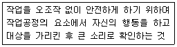
- 지적확인
- T.B.M
- 터치 앤드 콜
- 삼각 위험 예지훈련
(정답률: 85%)

2. 산업안전보건법령상 안전검사 유해/위험기계가 아닌 것은?
- 선반
- 리프트
- 압력용기
- 곤돌라
(정답률: 73%)
3. 50인의 상시 근로자를 가지고 있는 어느 사업장에 1년간 3건의 부상자를 내고 그 휴업일수가 219일 이라면 강도율은?
- 1.37
- 1.50
- 1.86
- 2.21
(정답률: 49%)
4. 조건반사설에 의한 학습이론의 원리에 해당하지 않는 것은?
- 강도의 원리
- 시간의 원리
- 효과의 원리
- 계속성의 원리
(정답률: 57%)
5. 의사결정 과정에 따른 리더십의 행동유형중 전제형에 속하는 것은?
- 집단 구성원에게 자유를 준다.
- 지도자가 모든정책을 결정한다.
- 집단토론이나 집단결정을 통해서 정책을 결정한다.
- 명목적인 리더의 자리를 지키고 부하 직원들의 의견에 따른다.
(정답률: 67%)
6. 하인리히의 사고발생의 연쇄성 5단계중 2단계에 해당되는 것은?
- 유전과 환경
- 개인적인 결함
- 불안전한 행동
- 사고
(정답률: 70%)
7. 착시현상 중 그림과 같이 우선평행의 호를 보고 이어 직선을 본 경우에 직선은 호와의 반대방향에 보이는 현상은?
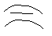
- 동화착오
- 분할착오
- 윤곽착오
- 방향착오
(정답률: 76%)
8. 인간의 사회적 행동의 기본 형태가 아닌 것은?
- 대립
- 도피
- 모방
- 협력
(정답률: 47%)
9. 안전보건관리조직의 형태 중 라인형 조직의 특성이 아닌 것은?
- 소규모 사업장(100명이하)에 적합하다.
- 라인에 과중한 책임을 지우기 쉽다.
- 안전관리 전담요원을 별도로 지정한다.
- 모든 명령은 생산계통을 따라 이루어진다.
(정답률: 72%)
10. 무재해 운동의 기본이념이 3대원칙이 아닌 것은?
- 무의 원칙
- 참가의 원칙
- 선취의 원칙
- 자주활동의 원칙
(정답률: 87%)
11. 안전교육방법 중 사례연구법의 장점이 아닌 것은?
- 흥미가 있고, 학습동기를 유발할 수 있다.
- 현실적인 문제의 학습이 가능하다.
- 관찰력과 분석력을 높일 수 있다.
- 원칙과 규정의 체계적 습득이 용이 하다.
(정답률: 69%)
12. 안전/보건표지의 색채 및 색도 기준 중 다음 ( )안에 알맞은 것은?
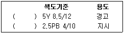
- 빨간색, 흰색
- 검은색, 노란색
- 흰색, 녹색
- 노란색, 파란색
(정답률: 82%)
13. 재해손실비의 평가방식 중 하인리히 계산방식으로 옳은 것은?
- 총재해비용 = 보험비용 + 비보험비용
- 총재해비용 = 직접손실비용 + 간접손실비용
- 총재해비용 = 공동비용 + 개별비용
- 총재해비용 = 노동손실비용 + 설비손실비용
(정답률: 87%)
14. 산업안전보건법령상 사업장 내 안전/보건교육중 근로자의 정기안전/보건교육내용에 해당하지 않는 것은?
- 산업재해보상보험 제도에 관한 사항
- 산업안전 및 사고예방에 관한 사항
- 산업보건 및 직업병 예방에 관한 사항
- 기계/기구의 위험성과 작업의 순서 및 동선에 관한 사항
(정답률: 62%)
15. 허즈버그의 동기/위생이론중 위생요인에 해당하지 않는 것은?
- 보수
- 책임감
- 작업조건
- 감독
(정답률: 61%)
16. 추락 및 감전 위험방지용 안전모의 난연성 시험 성능기준 중 모체가 불꽃을 내며 최소 몇 초 이상 연소되지 않아야 하는가?
- 3
- 5
- 7
- 10
(정답률: 70%)
17. TWI의 교육내용이 아닌 것은?
- Job Support Training
- Job Method Training
- Job Relation Training
- Job Instruction Training
(정답률: 67%)
18. 재해원인 분석방법의 통계적 원인분석 중 다음에서 설명하는 것은?
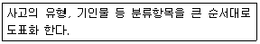
- 파레토도
- 특성요인도
- 크로스도
- 관리도
(정답률: 80%)
19. 교육의 3요소 중 교육의 주체에 해당하는 것은?
- 강사
- 교재
- 수강자
- 교육방법
(정답률: 82%)
20. 상황성 누발자의 재해유발원인가 거리가 먼 것은?
- 작업의 어려움
- 기계설비의 결함
- 심신의 근심
- 주의력의 산만
(정답률: 65%)
2과목: 인간공학 및 시스템안전공학
21. MIL-STD-882B에서 시스템 안전 필요사항을 충족시키고 확인된 위험을 해결하기 위한 우선권을 정하는 순서로 맞는 것은?
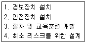
- 4, 2, 1, 3
- 4, 1, 2, 3
- 3, 4, 1, 2
- 3, 4, 2, 1
(정답률: 57%)
22. 반복되는 사건이 많이 있는 경우 FTA의 최소 컷셋과 관련이 없는 것은?
- Fussel Algorithm
- Boolean Algorithm
- Monte Carlo Algorithm
- Limnios & Ziani Algorithm
(정답률: 85%)
23. 계수형 표시장치를 사용하는 것이 부적합한 것은?
- 수치를 정확히 읽어야 하는 경우
- 짧은 판독 시간을 필요로 할 경우
- 판독 오차가 적은 것을 필요로 할 경우
- 표시장치에 나타나는 값들이 계속 변하는 경우
(정답률: 73%)
24. 안전성 향상을 위한 시설배치의 예로 적절하지 않은 것은?
- 기계배치는 작업의 흐름을 따른다.
- 작업자가 통로 쪽으로 등을 향하여 일하도록 한다.
- 기계설비 주위에 운전공간, 보수점검 공간을 확보한다.
- 통로는 선을 그어 명확히 구별하도록 한다.
(정답률: 83%)
25. 기계의 고장율이 일정한 지수분포를 가지며, 고장율이 0.04/시간 일 때, 이 기계가 10시간 동안 고장이 나지 않고 작동할 확률은 약 얼마인가?
- 0.40
- 0.67
- 0.84
- 0.96
(정답률: 44%)
26. 청각적 표시의 원리로 조작자에 대한 입력신호는 꼭필요한 정보만을 제공한다는 원리는?
- 양립성
- 분리성
- 근사성
- 검약성
(정답률: 61%)
27. 불대수의 관계식으로 맞는 것은?
- A(A·B)=B
- A+B=A·B
- A+A·B=A·B
- A+B·C= (A+B)(A+C)
(정답률: 71%)
28. 고장의 발생상황중 부적합품 제조, 생산과정에서의 품질관리 미비, 설계미숙 등으로 일어나는 고장은?
- 초기고장
- 마모고장
- 우발고장
- 품질관리고장
(정답률: 67%)
29. 누적손상장애(CTDs)의 원인이 아닌 것은?
- 과도한 힘의 사용
- 높은장소에서의 작업
- 장시간 진동공구의 사용
- 부적절한 자세에서의 작업
(정답률: 83%)
30. 인간/기계 시스템을 설계하기 위해 고려해야 할 사항으로 틀린 것은?
- 시스템 설계시 동작 경제의 원칙이 만족되도록 고려하여야 한다.
- 인간과 기계가 모두 복수인 경우, 종합적인 효과보다 기계를 우선적으로 고려한다.
- 대상이 되는 시스템이 위치할 환경조건이 인간에 대한 한계치를 만족하는가의 여부를 조사한다.
- 인간이 수행해야할 조작이 연속적인가 불연속적 인가를 알아보기위해 특성조사를 실시한다.
(정답률: 86%)
31. 좌식 평면 작업대에서의 최대 작업영역에 관한 설명으로 맞는 것은?
- 각 손의 정상작업영역 경계선이 작업자의 정면에서 교차되는 공통영역
- 윗팔과 손목을 중립자세로 유지한 채 손으로 원을 그릴 때, 부채꼴 원호의 내부 영역
- 어깨로부터 팔을 펴서 어깨를 축으로 하여 수평면상에 원을 그릴 때, 부채꼴 원호의 내부 지역
- 자연스러운 자세로 위팔을 몸통에 붙인 채 손으로 수평면상에 원을 그릴 때, 부채꼴 원호의 내부지역
(정답률: 70%)
32. 출력과 반대방향으로 그 속도에 비례해서 작용하는 힘 때문에 생기는 항력으로 원활한 제어를 도우며, 특히 규정된 변위 속도를 유지하는 효과를 가진 조종장치의 저항력은?
- 관성
- 탄성저항
- 점성저항
- 정지 및 미끄럼 마찰
(정답률: 57%)
33. 현장에서 인간공학의 적용분야로 가장 거리가 먼 것은?
- 설비관리
- 제품설계
- 재해/질병예방
- 장비/공구/설비의 설계
(정답률: 52%)
34. 신호검출 이론의 응용분야가 아닌 것은?
- 품질검사
- 의료진단
- 교통통제
- 시뮬레이션
(정답률: 66%)
35. FT도에서 사용되는 다음 기호의 의미로 맞는 것은?
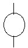
- 결함사상
- 통상사상
- 기본사상
- 제외사상
(정답률: 87%)
36. A요업공장의 근로자 최씨는 작업일 3월 15일에 다음과 같은 소음에 노출되었다. 총 소음 투여량은 약 얼마인가?
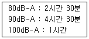
- 114.1
- 124.1
- 134.1
- 144.1
(정답률: 39%)
37. IES의 권고에 따른 작업장 내부의 추천반사율이 가장 높아야 하는 곳은?
- 벽
- 바닥
- 천장
- 가구
(정답률: 80%)
38. 일반적인 조종장치의 경우, 어떤 것을 켤 때 기대되는 운동방향이 아닌 것은?
- 레버를 앞으로 민다.
- 버튼을 우측으로 민다.
- 스위치를 위로 올린다.
- 다이얼을 반시계 방향으로 돌린다.
(정답률: 81%)
39. 작업장에서 광원으로 부터의 직사휘광을 처리하는 방법으로 맞는 것은?
- 광원의 휘도를 늘인다.
- 가리개, 차양을 설치한다.
- 광원을 시선에서 가까이 위치 시킨다.
- 휘광원 주위를 밝게 하여 광도비를 늘린다.
(정답률: 72%)
40. 정신적 작업부하 척도와 가장거리가 먼 것은?
- 부정맥
- 혈액성분
- 점멸융합주파수
- 눈 깜 박임률
(정답률: 74%)
3과목: 기계위험방지기술
41. 지름이 60cm이고, 20rpm으로 회전하는 롤러기의 무부하 동작에서 급정지 거리기준으로 옳은 것은?
- 앞면 롤러 원주의 1/1.5 이내 거리에서 급정지
- 앞면 롤러 원주의 1/2 이내 거리에서 급정지
- 앞면 롤러 원주의 1/2.5 이내 거리에서 급정지
- 앞면 롤러 원주의 1/3 이내 거리에서 급정지
(정답률: 55%)
42. 다음중 원심기에 적용하는 방호장치는?
- 덮개
- 권과방지장치
- 리미트 스위치
- 과부하 방지장치
(정답률: 74%)
43. 지게차의 작업과정에서 작업 대상물의 팔레트 폭이 b라고 할 때 적절한 포크 간격은? (단, 포크의 중심과 팔레트의 중심은 일치한다고 가정한다.)
- 1/4b ~ 1/2b
- 1/4b ~ 3/4b
- 1/2b ~ 3/4b
- 3/4b ~ 7/8b
(정답률: 64%)
44. 드릴작업시 유의사항 중 틀린 것은?
- 균열이 심한 드릴은 사용해서는 안된다.
- 드릴을 장치에서 제거할 경우에는 회전을 완전히 멈추고 한다.
- 드릴이 밑면에 나왔는지 확인을 위해 가공물 밑면에 손으로 만지면서 확인한다.
- 가공중에는 소리에 주의하여 드릴의 날에 이상한 소리가 나면 즉시 드릴을 연마하거나 다른 드릴과 교환한다.
(정답률: 88%)
45. 숫돌의 지름이 D(mm), 회전수 N(rpm)이라 할 경우 숫돌의 원주속도 V(m/min)를 구하는 식으로 옳은 것은?
- DN
- πDN
- DN/1000
- πDN/1000
(정답률: 79%)
46. 크레인 작업시 2000N의 화물을 걸어 25m/s2 가속도로 감아 올릴 때 로프에 걸리는 총하중은 몇 kN인가? (단, 중력 가속도는 9.81m/s2이다.)
- 3.1
- 5.1
- 7.1
- 9.1
(정답률: 54%)
47. 연삭숫돌을 사용하는 작업시 해당 기계의 이상 유무를 확인하기 위한 시험운전 시간으로 옳은 것은?
- 작업시작 전 30초이상, 연삭숫돌 교체후 5분이상
- 작업시작 전 30초이상, 연삭숫돌 교체후 3분이상
- 작업시작 전 1분이상, 연삭숫돌 교체후 5분이상
- 작업시작 전 1분이상, 연삭숫돌 교체후 3분이상
(정답률: 85%)
48. 프레스의 분류중 동력 프레스에 해당하지 않는 것은?
- 크랭크 프레스
- 토글 프레스
- 마찰 프레스
- 아버 프레스
(정답률: 74%)
49. 기계고장율의 기본모형에 해당하지 않는 것은?
- 예측고장
- 초기고장
- 우발고장
- 마모고장
(정답률: 82%)
50. 왕복운동을 하는 기계의 동작부분과 고정부분사이에 형성되는 위험점으로 프레스, 전단기등에서 주로 나타나는 것은?
- 끼임점
- 절단점
- 협착점
- 접선 물림점
(정답률: 72%)
51. 롤러에 설치하는 급정지 장치 조작부의 종류와 그 위치로 옳은 것은?(단, 위치는 조작부의 중심점을 기준으로 함)
- 발조작식은 밑면으로부터 0.2m이내
- 손조작식은 밑면으로부터 1.8m 이내
- 복부조작식은 밑면으로부터 0.6m이상 1m 이내
- 무릎조작식은 밑면으로부터 0.2m이상 0.4m 이내
(정답률: 75%)
52. 크레인에 사용하는 방호장치가 아닌 것은?
- 과부하 방지장치
- 가스집합장치
- 권과 방지장치
- 제동장치
(정답률: 79%)
53. 통로의 설치기준중 ( )안에 공통적으로 들어갈 숫자로 옳은 것은?
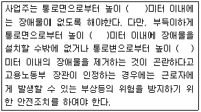
- 1
- 2
- 1.5
- 2.5
(정답률: 76%)
54. 화물적재시 지게차의 안정조건을 옳게 나타낸 것은?(단, W는 화물의 중량, Lw는 앞바퀴에서 화물중심까지의 최단거리, G는 지게차의 중량, Lg는 앞바퀴에서 지게차 중심 까지의 최단거리 이다.)
- G × Lg ≧ W × Lw
- W × Lw ≧ G × Lg
- G × Lw ≧ W × Lg
- W × Lg ≧ G × Lw
(정답률: 71%)
55. 선반 등으로부터 돌출하여 회전하고 있는 가공물에 설치할 방호장치는?
- 클러치
- 울
- 슬리브
- 베드
(정답률: 77%)
56. 작업자의 신체움직임을 감지하여 프레스의 작동을 급정지시키는 광전자식 안전장치를 부착한 프레스가 있다. 안전거리가 48cm인 경우 급정지에 소요되는 시간은 최대 몇 초 이내일 때 안전한가? (단, 급정지에 소요되는 시간은 손이 광선을 차단한 순간부터 급정지기구가 작동하여 슬라이드가 정지할 때 까지의 시간을 의미한다.)
- 0.1초
- 0.2초
- 0.3초
- 0.5초
(정답률: 56%)
57. 프레스 및 절단기에서 양수조작식 방호장치의 일반구조에 대한 설명으로 옳지 않은 것은?
- 누름버튼(레버포함)은 돌출형 구조로 설치할 것
- 누름버튼의 상호간 내측거리는 300mm 이상일 것
- 누름버튼을 양손으로 동시에 조작하지 않으면 작동시킬수 없는 구조일 것
- 정상동작표시등은 녹색, 위험표시등은 붉은색으로 하며, 쉽게 근로자가 볼수 있는 곳에 설치할 것
(정답률: 74%)
58. 프레스기에 사용되는 손쳐내기식 방호장치의 일반구조에 대한 설명으로 틀린 것은?
- 슬라이드 하행정거리의 1/4위치에서 손을 완전히 밀어내야 한다.
- 방호판의 폭은 금형폭의 1/2 이상이어야 하고, 행정길이가 300mm 이상의 프레스기계에는 방호판 폭을 300mm로 해야 한다.
- 부착볼트 등의 고정금속부분은 예리하게 돌출되지 않아야 한다.
- 손쳐내기봉의 행정(Stroke) 길이를 금형의 높이에 따라 조정할 수 있고, 진동폭은 금형폭 이상이어야 한다.
(정답률: 64%)
59. 연삭숫돌의 상부를 사용하는 것을 목적으로 하는 탁상용 연삭기 덮개의 노출각도는?
- 60도 이내
- 65도 이내
- 80도 이내
- 125도 이내
(정답률: 64%)
60. 다음 중 원통 보일러의 종류가 아닌 것은?
- 입형 보일러
- 노통 보일러
- 연관 보일러
- 관류 보일러
(정답률: 53%)
4과목: 전기 및 화학설비위험방지기술
61. 10Ω저항에 10A의 전류를 1분간 흘렸을 때의 발열량은 몇 caL 인가?
- 1800
- 3600
- 7200
- 14400
(정답률: 54%)
62. 다음중 인입용 비닐 절연전선에 해당하는 약어로 옳은 것은?
- RB
- IV
- DV
- OW
(정답률: 60%)
63. 작업장내 시설하는 저압전선에는 감전등의 위험으로 나전선을 사용하지 않고 있지만, 특별한 이유에 의하여 사용할 수 있도록 규정된 곳이 있는데 이에 해당되지 않는 것은?
- 버스덕트 작업에 의한 시설작업
- 애자사용 작업에 의한 전기로용 전선
- 유희용 전차 시설의 규정에 준하는 접촉전선을 시설하는 경우
- 애자사용 작업에 의한 전선의 피폭 절연물이 부식되지 않는 장소에 시설하는 전선
(정답률: 55%)
64. 다음 설명에 해당하는 위험장소의 종류로 옳은 것은? (공기중에서 가연성 분진운의 형태가 연속적, 또는 장기적 또는 단기적 자주 폭발성 분위기가 존재하는 장소)
- 0종 장소
- 1종 장소
- 20종 장소
- 21종 장소
(정답률: 57%)
65. 다음중 전선이 연소될 때의 단계별 순서로 가장 적절한 것은?
- 착화단계, 순시용단 단계, 발화단계, 인화단계
- 인화단계, 착화단계, 발화단계, 순시용단 단계
- 순시용단 단계, 착화단계, 인화단계, 발화단계
- 발화단계, 순시용단 단계, 착화단계, 인화단계
(정답률: 56%)
66. 절연물은 여러 가지 원인으로 전기저항이 저하되어 이른바 절연불량을 일으켜 위험한 상태가 되는데 절연불량의 주요원인이 아닌 것은?
- 정전에 의한 전기적 원인
- 온도상승에 의한 열적 요인
- 진동, 충격 등에 의한 기계적 요인
- 높은 이상전압 등에 의한 전기적 요인
(정답률: 59%)
67. 제1종, 제2종 접지공사에서 사람이 접촉 할 우려가 있는 경우에 시설하는 방법이 아닌 것은?
- 접지극은 지하 50cm이상의 깊이로 매설할 것
- 접지극은 금속체로부터 1m이상 이격시켜 매설 할 것
- 접지선은 절연전선, 케이블, 캡타이어케이블 등을 사용할 것
- 접지선은 지하 75cm에서 지표상 2m까지의 합성수지관 또는 몰드로 덮을 것
(정답률: 62%)
68. 정전기 제전기의 분류 방식으로 틀린 것은?
- 고전압인가형
- 자기 방전형
- 연X선형
- 접지형
(정답률: 44%)
69. 전기기기의 과도한 온도상승, 아크 또는 불꽃발생의 위험을 방지하기 위하여 추가적인 안전조치를 통한 안전도를 증가시킨 방폭구조를 무엇이라 하는가?
- 충전방폭구조
- 안전증방폭구조
- 비점화 방폭구조
- 본질안전 방폭구조
(정답률: 73%)
70. 다음 중 정전기의 발생요인을 적절하지 않은 것은?
- 도전성 재료에 의한 발생
- 박리에 의한 발생
- 유동에 의한 발생
- 마찰에 의한 발생
(정답률: 67%)
71. 다음 중 독성이 강한 순서로 옳게 나열된 것은?
- 일산화 탄소 > 염소 > 아세톤
- 일산화 탄소 > 아세톤 > 염소
- 염소 > 일산화 탄소 > 아세톤
- 염소 > 아세톤 >일산화 탄소
(정답률: 55%)
72. 어떤 혼합가스의 구성성분이 공기는 50vol%, 수소는 20vol%, 아세틸렌은 30vol%인 경우 이 혼합가스의 폭발하한계는? (단, 폭발하한값이 수소는 4vol%, 아세틸렌은 2.5vol% 이다.)
- 2.50%
- 2.94%
- 4.76%
- 5.88%
(정답률: 57%)
73. 산업안전보건법령에서 규정한 위험물질을 기준량 이상으로 제조 또는 취급하는 특수화학설비에 설치하여야 할 계측 장치가 아닌 것은?
- 온도계
- 유량계
- 압력계
- 경보계
(정답률: 53%)
74. 부탄의 연소하한값이 1.6vol% 일 경우, 연소에 필요한 최소 산소농도는 약 몇 vol% 인가?
- 9.4
- 10.4
- 11.4
- 12.4
(정답률: 51%)
75. LPG에 대한 설명으로 옳지 않은 것은?
- 강한 독성 가스로 분류된다.
- 질식의 우려가 있다.
- 누설시 인화, 폭발성이 있다.
- 가스의 비중은 공기보다 크다.
(정답률: 71%)
76. 배관설비 중 유체의 역류를 방지하기 위하여 설치하는 밸브는?
- 글로브밸브
- 체크밸브
- 게이트 밸브
- 시퀀스밸브
(정답률: 70%)
77. 인화점에 대한 설명으로 옳은 것은?
- 인화점이 높을수록 위험하다.
- 인화점이 낮을수록 위험하다.
- 인화점과 위험성은 관계없다.
- 인화점이 0°C 이상인 경우만 위험하다.
(정답률: 78%)
78. 응상폭발에 해당되지 않는 것은?
- 수증기폭발
- 전선폭발
- 증기폭발
- 분진폭발
(정답률: 45%)
79. 다음은 산업안전보건법령에 따른 위험물질의 종류중 부식성 염기류에 관한 내용이다. ( )안에 알맞은 수치는?
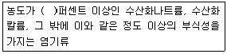
- 20
- 40
- 60
- 80
(정답률: 70%)
80. 고압가스 용기에 사용되며 화재등으로 용기의 온도가 상승하였을 때 금속의 일부분을 녹여 가스의 배출구를 만들어 압력을 분출시켜 용기의 폭발을 방지하는 안전장치는?
- 가용합금 안전밸브
- 방유제
- 폭압방산공
- 폭발억제장치
(정답률: 65%)
5과목: 건설안전기술
81. 다음과 같은 조건에서 방망사의 신품에 대한 최소 인장강도로 옳은 것은? (단, 그물코의 크기는 10cm, 매듭방망)
- 240kg
- 200kg
- 150kg
- 110kg
(정답률: 53%)
82. 굴착공사표준안전작업지침에 따른 인력굴착 작업 시 굴착면이 높아 계단식 굴착을 할 때 소단의 폭은 수평거리로 얼마 정도하여야 하는가?
- 1m
- 1.5m
- 2m
- 2.5m
(정답률: 44%)
83. 다음 빈칸에 알맞은 숫자를 순서대로 옳게 나타낸 것은?(관련 규정 개정전 문제로 여기서는 기존 정답인 3번을 누르면 정답 처리됩니다. 자세한 내용은 해설을 참고하세요.)
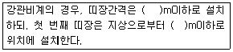
- 2, 2
- 2.5, 3
- 1.5, 2
- 1,3
(정답률: 61%)
84. 다음 건설기계중 360도 회전작업이 불가능 한 것은?
- 타워 크레인,
- 크롤러 크레인
- 가이데릭
- 삼각데릭
(정답률: 71%)
85. 지내력 시험을 통하여 다음과 같은 하중-침하량 곡선을 얻었을 때 장기하중에 대한 허용 지내력도로 옳은 것은? (단, 장기하중에 대한 허용 지내력도= 단기하중에 대한 허용 지내력도×1/2)
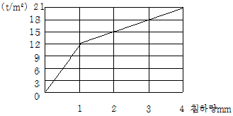
- 6 t/m2
- 7t/m2
- 12t/m2
- 14t/m2
(정답률: 49%)
86. 앞 뒤 두 개의 차륜이 있으며(2축 2륜) 각각의 차축이 평행으로 배치된 것으로 찰흙, 점성토 등의 두꺼운 흙을 다짐하는 데는 적당하나 단단한 각재를 다지는 데는 부적당한 기계는?
- 머케덤 롤러
- 탠덤 롤러
- 래머
- 진동롤러
(정답률: 63%)
87. 다음은 건설현장의 추락재해를 방지하기 위한 사항이다. 빈칸에 들어갈 내용으로 옳은 것은?
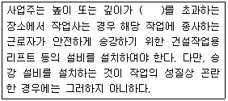
- 2m
- 3m
- 4m
- 5m
(정답률: 70%)
88. 작업장의 바닥, 도로 및 통로등에서 낙하물이 근로자에게 위험을 미칠 우려가 있는 경우의 필요한 조치의 준수사항으로 옳지 않은 것은?
- 수직보호망 또는 방호 선반의 설치
- 출입금지구역의 설정
- 낙하물 방지망의 수평면과의 각도는 20도 이상 30도 이하 유지
- 낙하물 방지망을 높이15m 이내마다 설치
(정답률: 68%)
89. 화물취급작업 중 화물 적재 시 준수하여야 할 사항으로 옳지 않은 것은?
- 침하 우려가 없는 튼튼한 기반위에 적재할 것
- 중량의 화물은 공간의 효율성을 고려하여 건물의 칸막이나 벽에 기대어 적재할 것
- 불안정할 정도로 높이 쌓아 올리지 말 것
- 하중이 한쪽으로 치우치지 않도록 쌓을 것
(정답률: 85%)
90. 하루의 평균기온이 4°C이하로 될 것이 예상되는 기상조건에서 낮에도 콘크리트가 동결의 우려가 있는 경우 사용되는 콘크리트는?
- 고강도 콘크리트
- 경량 콘크리트
- 서중 콘크리트
- 한중 콘크리트
(정답률: 78%)
91. 건설현장에서 근로자가 안전하게 통행할 수 있도록 통로에 설치하는 조명의 조도 기준은?
- 65럭스 이상
- 75럭스 이상
- 85럭스 이상
- 95럭스 이상
(정답률: 79%)
92. 리프트의 안전장치에 해당하지 않는 것은?
- 권과방지장치
- 비상정지장치
- 과부하 방지장치
- 조속기
(정답률: 68%)
93. 방망의 정기시험은 사용개시 후 몇 년 이내에 실시하는가?
- 1년 이내
- 2년 이내
- 3년 이내
- 4년 이내
(정답률: 48%)
94. 거푸집동바리등을 조립하는 경우의 준수사항으로 옳지 않은 것은?
- 강재와 강재의 접속부 및 교차부는 볼트/플램프 등 전용철물을 사용하여 단단히 연결할 것
- 동바리로 사용하는 강관(파이프 서포트는제외)은 높이 2m이내마다 수평연결재를 2개 방향으로 만들고 수평연결재의 변위를 방지할 것
- 동바리의 이음은 맞댄이음으로 하고 장부이음의 적용은 절대 금할 것
- 거푸집이 곡면인 경우에는 버팀대의 부착 등 그 거푸집의 부상을 방지하기 위한 조치를 할 것
(정답률: 64%)
95. 다음 공사 규모를 가진 사업장 중 유해위험방지계획서를 제출해야할 대상 사업장은?
- 최대 지간길이가 40m인 교량 건설공사
- 연면적 4000m2 인 종합병원 공사
- 연면적 3000m2 인 종교시설 공사
- 연면적 6000m2인 지하도상가 공사
(정답률: 69%)
96. 다음은 건설업 산업안전보건관리비 계상 및 사용기준의 적용에 관한 사항이다. 빈칸에 들어갈 내용으로 옳은 것은?(2020년 01월 23일 개정된 규정 적용됨)
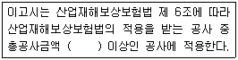
- 2천만원
- 4천만원
- 8천만원
- 1억원
(정답률: 63%)
97. 거푸집동바리 등을 조립하는 때 동바리로 사용하는 파이프 서포트에 대하여는 다음 각 목에서 정하는 바에 의해 설치하여야 한다. 빈칸에 들어갈 내용으로 옳은 것은?
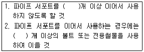
- 1,2
- 2,3
- 3,4
- 4,5
(정답률: 67%)
98. 터널 계측관리 및 이상발견시 조치에 관한 설명으로 옳지 않은 것은?
- 숏크리트가 벗겨지면 두께를 감소시키고 뿜어 붙이기를 금한다.
- 터널의 계측관리는 일상계측과 대표계측으로 나뉜다.
- 록볼트의 축력이 증가하여 지압판이 휘게 되면 추가볼트를 시공한다.
- 지중변위가 크게 되고 이완영역이 이상하게 넓어지면 추가볼트를 시공한다.
(정답률: 53%)
99. 거푸집 해체작업시 일반적인 안전수칙과 거리가 먼 것은?
- 거푸집 동바리를 해체할 때는 작업책임자를 선임한다.
- 해체된 거푸집 재료를 올리거나 내릴때는 달줄이나 달포대를 사용해야 한다.
- 보 및 또는 슬라브 거푸집을 해체할 때는 동시에 해체하여야 한다.
- 거푸집의 해체가 곤란한 경우 구조체에 무리한 충격이나 지렛대 사용은 금해야 한다.
(정답률: 77%)
100. 비계(달비계, 달대비계 및 말비계 제외)의 높이가 2m이상인 작업장소에 적합한 작업발판의 폭은 최소 얼마 이상이어야 하는가?
- 10cm
- 20cm
- 30cm
- 40cm
(정답률: 65%)